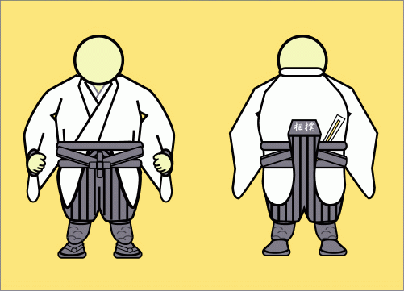
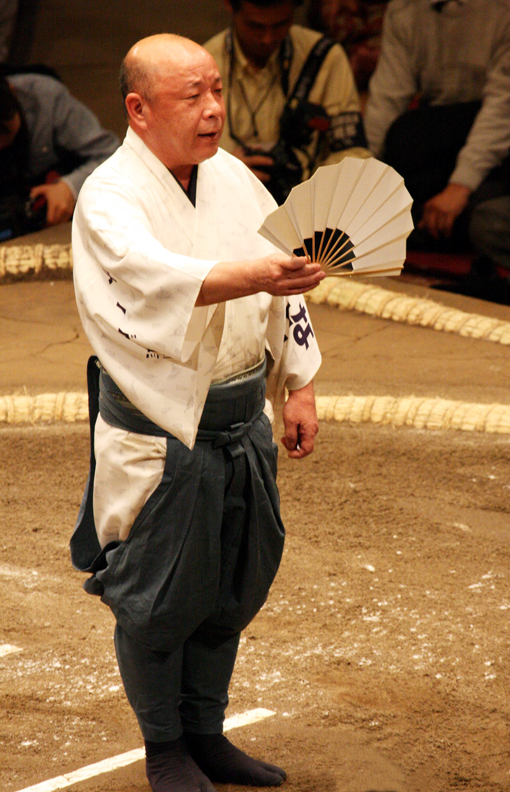
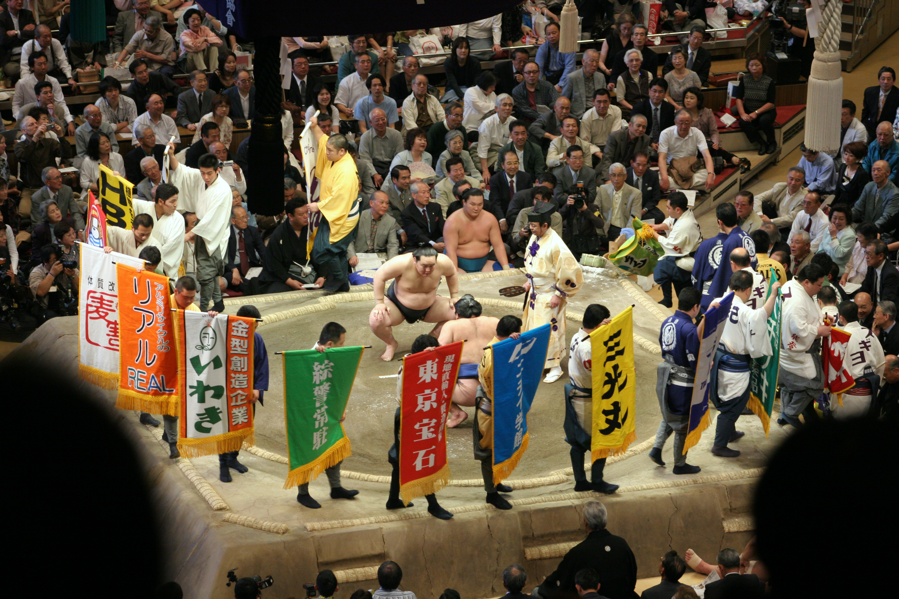

Who are the Yobidashi?
A yobidashi, often translated in English as "usher", "ring attendant", or "ring announcer", is an employee of the Japan Sumo Association responsible for various tasks essential to the traditional running of bashos.

